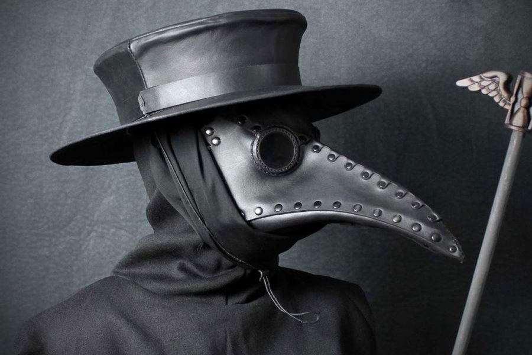
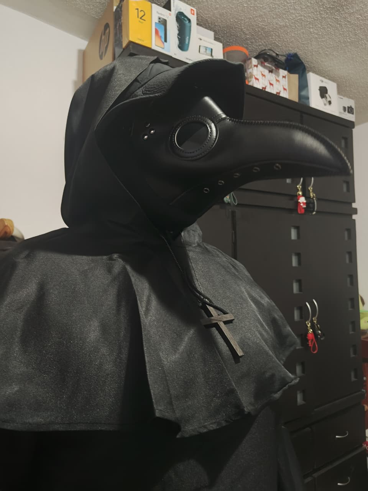

Nombre del Personaje / Disfraz
Médico de la Peste Negra
 Descripción del Personaje
El Médico de la Peste Negra es una figura histórica del siglo XIV, reconocida por su enigmática vestimenta. Durante los brotes de peste bubónica en Europa, estos médicos atendían a los enfermos cubiertos de pies a cabeza, utilizando una máscara con pico relleno de hierbas aromáticas, creyendo que así evitaban respirar el “aire contaminado”.
Su imagen se ha convertido en un símbolo de misterio y temor, representando el esfuerzo humano ante la enfermedad y el desconocimiento. Actualmente, su estética se relaciona con el terror clásico y la historia medieval.
Categoría del Personaje
Terror Clásico / Histórico
Detalles del Vestuario
El atuendo se compone de una túnica negra larga, guantes, botas de cuero y el característico sombrero de ala ancha. La máscara con pico simboliza protección frente al mal aire.
Se acompaña con un bastón de madera, que se usaba para mantener distancia de los pacientes. El maquillaje se limita a oscurecer el contorno de los ojos, sin elementos peligrosos ni punzocortantes.
Declaración de Cumplimiento
Declaro que mi disfraz cumple con todas las normas de seguridad y respeto establecidas por la institución. No incluye materiales inflamables, punzocortantes ni elementos ofensivos. Su finalidad es educativa y cultural, como parte del proyecto de los submódulos de Base de Datos y Programación Web.